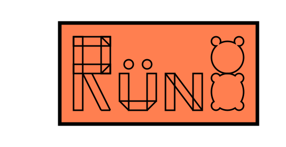

Indrek Rünkaru
Junior software developer
indrek93@gmail.com

Like a lot of developers I can confidently promise that most Javascript, CSS or HTML issues are not something that I couldn't handle without the help of Google. Among the more helpful front-end frameworks I have had most experience using Vue.js by developing a booking app for barbershops.
During my education I have had minor experience with other Javascript frameworks like React or Angular.
For Back-end I have most experience with using PHP, and PHP template rendering engine Twig. I believe myself to have adequate experience to become a supportive back-end team-member.
I have a bit of experience with Java and C++ which I have used for minor apps and Arduino projects.
Previously I have worked on multiple wordpress projects. I am most confident when I'm making tailor made solutions using Timber.
I have previous experience working with Mysql, Mongodb and Firestore database types.
During the summer of 2019 I worked on a software for barbershop management. The program was written using Vue.js 2.0 for front-end and Firestore for back-end. Firesotre's API helped our customers to have constant updates on their current business situation without refreshing the page. The intended users, or our customers' customers, would also see real-time updates for when the user had successfully registered for a haircut without refreshing the page. The project involved handling all the different possible aspects for what an user might do. During this summer I developed a proper base for Vue and object oriented programming.

The front-page view of Bookify
During the winter of 2020 The Tartu University Academic Women's Choir approached my teacher. They were looking for volunteers interested in developing an Intranet for their organisation. A team of willing students was formed and the team set out to develop the platform. As one of the volunteers willing to take on the job my tasks involved testing and back-end. We used Wordpress as the base for our project because the customer had previous experience with this CMS. From there we decided to develop a Wordpress theme from scratch. For that purpose we used Timber and Twig for presenting Wordpress front-end with dynamically used PHP for querying the database.

The front-page view of TÜAN intranet
I studied software development in the Tartu Vocational School where i received my EQF level 4 qualifications. Tartu Vocational school differs from Universities in a manner where studying is more intensely concentrated on building practical solutions from start to finish. Where as in universities students will spend more effort in studying theoretical information that often does not see practical use in real life situations.
I enjoy doing things with my hands. Without having any specific hobby that would define me I have dabbled in woodworking, brewing, hydroponics, welding and so forth. Only boring people can get bored, there's an infinity of things that I would have to do before I could get bored or run out of hobbies to try.
Before I became a software developer I was an electrician/builder for about five years. The career change happened due to health issues which made it not a good idea to follow such a physical career path. I chose to become a software developer because it was a dream of mine that just seemed too impossible to become true: To build games, websites and programs that would be a benefit to millions of people. Like ancient stonemasons building cathedrals I could build something that maybe a billion people would use, be helped by or enjoy.